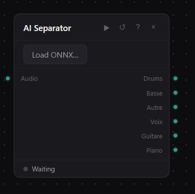

Use cases
I work on suno. I want to make a new track in the same mood as an older track of mine.
Just add an entry component, audio input, then add an audio inverter component as output use the Wav -> MP3 component. Upload your file on Suno, choose the same prompt and same model as the original. The audio inverter will simply play your audio track in reverse. In this way, you keep the key, tempo, and chords.
Click on the picture to enlarge
I want to create a melody played with waterdrop sounds
There are a lot of solutions here. What you have to do is to isolate a sound with a unique waterdop sound in mp3 or wav format. There is one under the installation directory of the attic software : \Attic\resources\music collection\waterdop.mp3
Then we will use a « Melody sequencer » component then chain it with a « Midi sampler », then we apply a « convolutional reverb » effect.
Click on the picture to enlarge
Impossible d'accéder à la ressource audio ou vidéo à l'adresse :
La ressource n'est plus disponible ou vous n'êtes pas autorisé à y accéder. Veuillez vérifier votre accès puis recharger la vidéo.
My workflow is too big there are components everywhere !
Just click on components maintaining the Control key of your keybord. Their borders will change their color.
Click on the picture to enlarge
Then click on group :
Click on the picture to enlarge
Don't forget to rename your new meta component.
Click on the picture to enlarge
You will find it in the Meta-components catalog menu. It's now reusable.
I would like to make something like an airplane announcement.
First of all we could generate an airplane atmosphere only inside the attic software, but we have some bank sounds in our favorites :
1 - Let's go to pixabay, type airplane and choose the freesound_community-airplane-atmos-22955.mp3
2 - Upload it in attic with the « Audio input component »
Just reproduce carefully the workflow below :
1 - Annoucement branch : Just put your text in a text input component and chain it with a Speech T5 TTS component (choose a voice in the inspector parameters), apply a soft reverb to smooth the sound, add silence : 5 secondes at the beginning of the announcement.
2 - then fade the beginning of the airplane sound (the other branch), use a compressor not to cover the voice (minus 30%)
3 - use the mixer component
4 - cut the play 5 seconds after the ending of the announcement (Extract zone)
6 - fade the sound 3 second before the end
Click on the picture to enlarge
You can upload the Json workflow here :
This is the result :
Impossible d'accéder à la ressource audio ou vidéo à l'adresse :
La ressource n'est plus disponible ou vous n'êtes pas autorisé à y accéder. Veuillez vérifier votre accès puis recharger la vidéo.
I have a song, I would like to separate the voice of the singer from the other instruments.
Just use the AI separator component :

Attention :
Warning !
Some AI LLM are embarked in the software, this is the reason why it's a kind of heavy 2G, some others are uploaded with the first use of the corresponding components. Some are heavy, so just be patient. It's only the first time. It is particularly the case with the Whisper multilingual speech to text (hours needed).